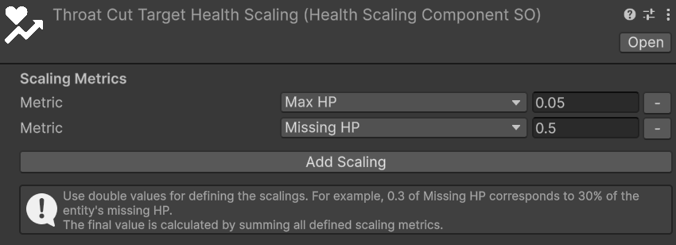

Health Scaling Component
Relative path: Scaling -> Health Scaling Component
Base framework convenience relative path: Astra RPG Framework -> Scaling -> Health Scaling Component
HealthScalingComponentSO is a ScalingComponent provided by Astra RPG Health that calculates a scaled value from an entity's health metrics — current HP, maximum HP, or missing HP. It plugs into ScalingFormula assets as any other scaling component, enabling mechanics such as HP-based damage abilities and shields or heals that grow proportionally to an entity's health pool.
Note
HealthScalingComponentSO requires the target entity to have an EntityHealth component. If the component is absent, CalculateValue returns 0 and logs a warning. Refer to Entity Health Component for setup details.
Inspector
The inspector exposes a Scaling Metrics list, where each entry pairs one health metric with a double multiplier.
Here is a screenshot of the HealthScalingComponentSO inspector with two entries configured:

Each entry consists of:
- Metric: the health value to scale on. See Health Metrics for the available options.
- Value (double): the multiplier applied to the chosen metric.
0.3means 30%.
Use the Add Scaling button to append a new entry and the − button on the right of each row to remove it.
Health Metrics
| Metric | Description |
|---|---|
| HP | The entity's current HP at the moment of calculation. |
| Max HP | The entity's current maximum HP. |
| Missing HP | The difference between maximum and current HP (max − current). |
Combining Multiple Metrics
A single HealthScalingComponentSO can contain any number of entries. The final value is the integer sum of each individual contribution:
total = round(metric₁_value × multiplier₁) + round(metric₂_value × multiplier₂) + …
For example, a component configured with Missing HP: 0.3 and Max HP: 0.1 on an entity with 200 Max HP and 80 current HP (120 missing) yields:
round(120 × 0.3) + round(200 × 0.1) = 36 + 20 = 56
Usage in a Scaling Formula
HealthScalingComponentSO is a ScalingComponent, so it plugs directly into the Self Scaling Components or Target Scaling Components lists of a ScalingFormula. Refer to the Scaling Formulas section of the base framework documentation for the full workflow.
Tip
Assign the component to Target Scaling Components when the value should reflect the target's health state — for example, execute damage that scales with the target's missing HP. Use Self Scaling Components when the value reflects the caster's state — for example, a shield whose strength scales with the caster's max HP.